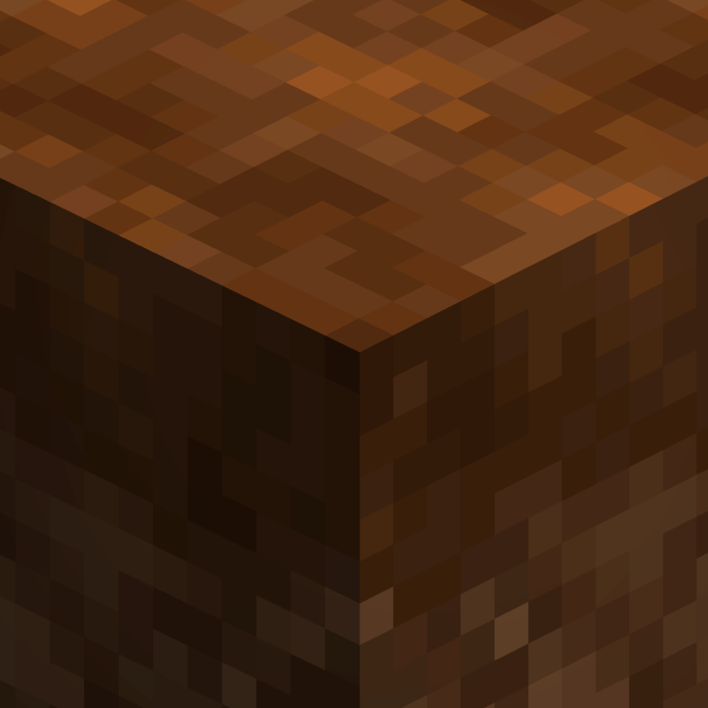
[Let's Do] Farm & Charm
共 139 个条目 · farm_and_charm
版本: 1.1.23 · 来源: letsdo-farm_and_charm-neoforge-1.1.23.jar
The farm calls: Experience the art of advanced agriculture and farmhouse cuisine! Use mincers, cooking pots, as well as new grains and fruit varieties to enhance your culinary and agricultural skills.
MC百科页面: https://www.mcmod.cn/class/2069.html（Charm - MC百科|最大的Minecraft中文MOD百科）
官方介绍 （Modrinth · 中文版由 GLM AI 翻译，仅供参考）
进阶农业与农舍美食
Let's Do 系列几大人气模组的核心
"农田在呼唤"
Farm & Charm（农场与魅力）为 Minecraft 的耕种体验带来更深入的农业玩法、实用的农场方块以及农舍风味的烹饪。模组注重让各系统融为一体、各有用途，并与 Let's Do 系列的整体风格保持一致。
无论你是农场帮工还是农场主，都能悉心照料这片土地。见证生长。
Farm & Charm 是 Let's Do 美食模组中的招牌之作，为农业相关机制提供核心基础。
功能特性
农耕与农业
- 改良耕地、施肥土壤与多用途肥料
- 实用的农场方块，如洒水器、稻草人与喂食槽
- 新的谷物与水果品种，拓展作物成长路线
运输与实用工具
- 手推小车，让物品与收成的运输更轻松
加工与烹饪
- 绞肉机，既能给原木剥皮，也能加工食材
- 烹饪锅、茶饮与农舍风味菜肴
- 既有给玩家享用的食物，也有给鸡、狼和猫的食物
装饰元素
- 一系列乡村风格装饰方块，装点农场与厨房
兼容性
Farm & Charm 与 Brewery、Bakery 和 Candlelight 的标准版本兼容。
为获得最一致的体验，推荐使用专用兼容版本：
- Let's Do Brewery 兼容版本
- Let's Do Bakery 兼容版本
- Let's Do Candlelight 兼容版本
耕耘土地。
收获庄稼。
尽情生活。
献给 MissLilitu
由 GLM AI 翻译，仅供参考
查看英文原文（Modrinth）
Advanced Agriculture & Farmhouse Cuisine
The core mod for a few fan favorites of the Let's Do collection
"The farm calls"
Farm & Charm expands Minecraft’s farming experience with deeper agriculture, functional farm blocks, and farmhouse-style cooking. The focus lies on systems that feel integrated, purposeful, and consistent with the Let’s Do collection.
Nurture the land whether farmhand or farmer. Show growth.
Farm & Charm is the signature mod of the Let’s Do food mods, serving as a central foundation for farming-related mechanics.
Features
Farming & Agriculture
- Improved Farmland, Fertilized Soil, and Fertilizer with multiple applications
- Functional farm blocks such as Water Sprinklers, Scarecrows, and Feeding Troughs
- New grains and fruit varieties for expanded crop progression
Transport & Utility
- Carts for easier transport of items and harvests
Processing & Cooking
- A Meat Grinder for stripping logs and processing food items
- Cooking Pots, tea, and farmhouse-style dishes
- Food for players as well as chickens, wolves, and cats
Decorative Elements
- A selection of rustic decorative blocks for farms and kitchens
Compatibility
Farm & Charm is compatible with the standard releases of Brewery, Bakery, and Candlelight.
For the most consistent experience, the dedicated compatibility versions are recommended:
- Let’s Do Brewery Compat Version
- Let’s Do Bakery Compat Version
- Let’s Do Candlelight Compat Version
Work the land.
Yield the crop.
Live life to the fullest.
Dedicated to MissLilitu
物品与方块
 培根
培根farm_and_charm:bacon · 物品
 培根鸡蛋
培根鸡蛋farm_and_charm:bacon_with_eggs · 物品farm_and_charm:baked_lamb_ham
farm_and_charm:baked_lamb_ham · 物品
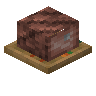
烤羊腿farm_and_charm:baked_lamb_ham_block · 方块
 大麦
大麦farm_and_charm:barley · 物品
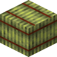
大麦捆farm_and_charm:barley_ball · 方块?作物大麦
farm_and_charm:barley_crop · 方块大麦土豆饼
farm_and_charm:barley_patties_with_potatoes · 物品大麦种子
farm_and_charm:barley_seeds · 物品大麦汤
farm_and_charm:barley_soup · 物品蔬菜牛肉饼
farm_and_charm:beef_patty_with_vegetables · 物品
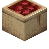
袋装甜菜farm_and_charm:beetroot_bag · 方块
 黄油
黄油farm_and_charm:butter · 物品
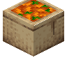
袋装胡萝卜farm_and_charm:carrot_bag · 方块
 猫粮
猫粮farm_and_charm:cat_food · 物品
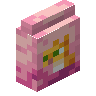
Cat Food Bagfarm_and_charm:cat_food_bag · 方块
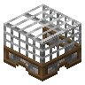
Cattlegridfarm_and_charm:cattlegrid · 方块
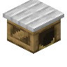
Chicken Coopfarm_and_charm:chicken_coop · 方块鸡饲料
farm_and_charm:chicken_feed · 物品
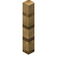
Chicken Fencefarm_and_charm:chicken_fence · 方块
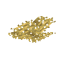
Chicken Nestfarm_and_charm:chicken_nest · 方块
 鸡肉块
鸡肉块farm_and_charm:chicken_parts · 物品
 培根鸡肉卷烩面
培根鸡肉卷烩面farm_and_charm:chicken_wrapped_in_bacon · 物品Compost
farm_and_charm:compost · 物品香煎鳕鱼
farm_and_charm:cooked_cod · 物品
 香煎鲑鱼
香煎鲑鱼farm_and_charm:cooked_salmon · 物品?平底锅
farm_and_charm:cooking_pan · 方块
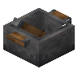
烹饪锅farm_and_charm:cooking_pot · 方块
 玉米
玉米farm_and_charm:corn · 物品
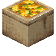
袋装玉米farm_and_charm:corn_bag · 方块?作物玉米
farm_and_charm:corn_crop · 方块
 玉米碎
玉米碎farm_and_charm:corn_grits · 物品混合碗
farm_and_charm:crafting_bowl · 方块
 狗粮
狗粮farm_and_charm:dog_food · 物品Dog Food Bag
farm_and_charm:dog_food_bag · 方块
 面团
面团farm_and_charm:dough · 物品Dungarees
farm_and_charm:dungarees · 物品
 农夫沙拉
农夫沙拉farm_and_charm:farmer_salad · 物品farm_and_charm:farmers_bread
farm_and_charm:farmers_bread · 物品
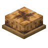
农夫面包farm_and_charm:farmers_bread_block · 方块
 farm_and_charm:farmers_breakfast
farm_and_charm:farmers_breakfastfarm_and_charm:farmers_breakfast · 物品
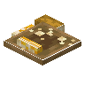
农夫早餐farm_and_charm:farmers_breakfast_block · 方块
 食槽
食槽farm_and_charm:feeding_trough · 方块
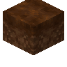
肥沃耕地farm_and_charm:fertilized_farmland · 方块
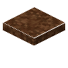
肥沃泥土farm_and_charm:fertilized_soil · 方块
 肥料
肥料farm_and_charm:fertilizer · 物品
 面粉
面粉farm_and_charm:flour · 物品
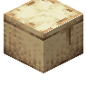
袋装面粉farm_and_charm:flour_bag · 方块
 匈牙利汤
匈牙利汤farm_and_charm:goulash · 物品
 farm_and_charm:grandmothers_strawberry_cake
farm_and_charm:grandmothers_strawberry_cakefarm_and_charm:grandmothers_strawberry_cake · 物品
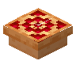
奶奶的草莓蛋糕farm_and_charm:grandmothers_strawberry_cake_block · 方块
 马饲料
马饲料farm_and_charm:horse_fodder · 物品Iron Divider
farm_and_charm:iron_divider · 方块玉米粒
farm_and_charm:kernels · 物品
 羔羊肉火腿
羔羊肉火腿farm_and_charm:lamb_ham · 物品
 羊排烤玉米
羊排烤玉米farm_and_charm:lamb_with_corn · 物品
 生菜
生菜farm_and_charm:lettuce · 物品
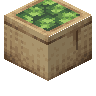
袋装生菜farm_and_charm:lettuce_bag · 方块作物生菜
farm_and_charm:lettuce_crop · 方块生菜种子
farm_and_charm:lettuce_seeds · 物品
 碎牛肉
碎牛肉farm_and_charm:minced_beef · 物品
 绞肉机
绞肉机farm_and_charm:mincer · 方块荨麻叶茶
farm_and_charm:nettle_tea · 方块杯装荨麻叶茶
farm_and_charm:nettle_tea_cup · 物品
 燕麦
燕麦farm_and_charm:oat · 物品燕麦捆
farm_and_charm:oat_ball · 方块?作物燕麦
farm_and_charm:oat_crop · 方块
 farm_and_charm:oat_pancake
farm_and_charm:oat_pancakefarm_and_charm:oat_pancake · 物品
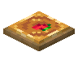
燕麦饼farm_and_charm:oat_pancake_block · 方块燕麦种子
farm_and_charm:oat_seeds · 物品草莓燕麦片
farm_and_charm:oatmeal_with_strawberries · 物品
 洋葱
洋葱farm_and_charm:onion · 物品
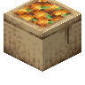
袋装洋葱farm_and_charm:onion_bag · 方块?作物洋葱
farm_and_charm:onion_crop · 方块
 洋葱汤
洋葱汤farm_and_charm:onion_soup · 物品
 Packed Dirt
Packed Dirtfarm_and_charm:packed_dirt · 方块洋葱酱意面
farm_and_charm:pasta_with_onion_sauce · 物品
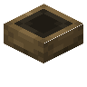
Pet Bowlfarm_and_charm:pet_bowl · 方块干草叉
farm_and_charm:pitchfork · 物品
 犁车
犁车farm_and_charm:plow · 物品
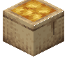
袋装土豆farm_and_charm:potato_bag · 方块土豆羹
farm_and_charm:potato_soup · 物品farm_and_charm:potato_with_roast_meat
farm_and_charm:potato_with_roast_meat · 物品
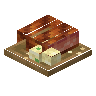
土豆烤肉farm_and_charm:potato_with_roast_meat_block · 方块
 生意面
生意面farm_and_charm:raw_pasta · 物品车前叶茶
farm_and_charm:ribwort_tea · 方块杯装车前叶茶
farm_and_charm:ribwort_tea_cup · 物品
 烤鸡
烤鸡farm_and_charm:roasted_chicken · 物品
 farm_and_charm:roasted_corn
farm_and_charm:roasted_cornfarm_and_charm:roasted_corn · 物品
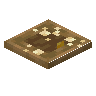
烤玉米farm_and_charm:roasted_corn_block · 方块烘焙机
farm_and_charm:roaster · 方块
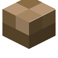
Ropefarm_and_charm:rope · 方块
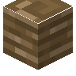
Rope Knotfarm_and_charm:rope_knot · 方块腐烂的番茄
farm_and_charm:rotten_tomato · 物品
 香肠伴燕麦饼
香肠伴燕麦饼farm_and_charm:sausage_with_oat_patty · 物品§6稻草人
farm_and_charm:scarecrow · 方块
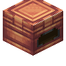
铜制筒仓farm_and_charm:silo_copper · 方块
 木制筒仓
木制筒仓farm_and_charm:silo_wood · 方块
 番茄浓汤
番茄浓汤farm_and_charm:simple_tomato_soup · 物品
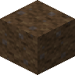
Stable Floorfarm_and_charm:stable_floor · 方块
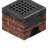
火炉farm_and_charm:stove · 方块
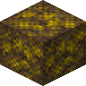
Straw Stable Floorfarm_and_charm:straw_stable_floor · 方块
 草莓
草莓farm_and_charm:strawberry · 物品
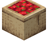
袋装草莓farm_and_charm:strawberry_bag · 方块?作物草莓
farm_and_charm:strawberry_crop · 方块草莓种子
farm_and_charm:strawberry_seeds · 物品草莓果茶
farm_and_charm:strawberry_tea · 方块杯装草莓果茶
farm_and_charm:strawberry_tea_cup · 物品farm_and_charm:stuffed_chicken
farm_and_charm:stuffed_chicken · 物品
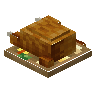
填馅鸡farm_and_charm:stuffed_chicken_block · 方块farm_and_charm:stuffed_rabbit
farm_and_charm:stuffed_rabbit · 物品
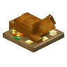
填馅兔子farm_and_charm:stuffed_rabbit_block · 方块
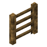
Sturdy Ladderfarm_and_charm:sturdy_ladder · 方块
 供应推车
供应推车farm_and_charm:supply_cart · 物品
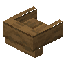
Timber Wellfarm_and_charm:timber_well · 方块
 番茄
番茄farm_and_charm:tomato · 物品
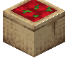
袋装番茄farm_and_charm:tomato_bag · 方块作物番茄
farm_and_charm:tomato_crop · 方块番茄种子
farm_and_charm:tomato_seeds · 物品
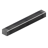
工具架farm_and_charm:tool_rack · 方块
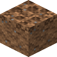
Trampled Packed Dirtfarm_and_charm:trampled_packed_dirt · 方块
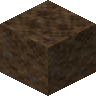
Trampled Stable Floorfarm_and_charm:trampled_stable_floor · 方块
 洒水器
洒水器farm_and_charm:water_sprinkler · 方块
 Water Trough
Water Troughfarm_and_charm:water_trough · 方块
 野生大麦
野生大麦farm_and_charm:wild_barley · 方块
 野生甜菜
野生甜菜farm_and_charm:wild_beetroots · 方块
 野生胡萝卜
野生胡萝卜farm_and_charm:wild_carrots · 方块
 野生玉米
野生玉米farm_and_charm:wild_corn · 方块
 野生小麦
野生小麦farm_and_charm:wild_emmer · 方块
 野生生菜
野生生菜farm_and_charm:wild_lettuce · 方块
 野生荨麻
野生荨麻farm_and_charm:wild_nettle · 方块
 野生燕麦
野生燕麦farm_and_charm:wild_oat · 方块
 野生洋葱
野生洋葱farm_and_charm:wild_onions · 方块
 野生土豆
野生土豆farm_and_charm:wild_potatoes · 方块
 野生车前草
野生车前草farm_and_charm:wild_ribwort · 方块
 野生草莓
野生草莓farm_and_charm:wild_strawberries · 方块
 野生番茄
野生番茄farm_and_charm:wild_tomatoes · 方块
 窗台
窗台farm_and_charm:window_sill · 方块
 酵母
酵母farm_and_charm:yeast · 物品